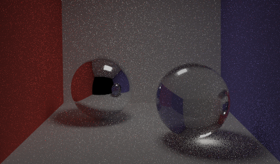
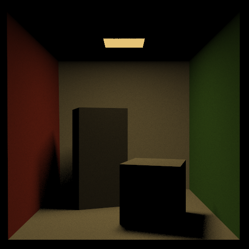

A Physically-Based Renderer
In CSCI1230 Computer Graphics, I had previously implemented a basic raytracer. This shot one ray per pixel at a given scene and could handle direct lighting and reflections, for the most part. For this assignment, I implemented a physically-based renderer based on the path tracing algorithm, building on the basic raytracer to handle more complex scenes, with support for indirect lighting to create even more realistic scenes.
Path tracing is a simple, elegant Monte Carlo sampling approach to solving the rendering equation. Like ray tracing, it produces images by firing rays from the eye or camera into the scene. Unlike basic ray tracing, it generates recursive bounce rays in a physically accurate manner, making it an unbiased estimator for the rendering equation. Path tracers support a wide variety of interesting visual effects, like soft shadows, color bleeding, and caustics, though they may take a long time to converge to a noise-free image.
First, I implemented a variety of BRDFs to model how light interacts with different surfaces. A BRDF is a function that defines how light is reflected or absorbed by a surface based on the angle of the light, the surface, and the ray. For the assignment, I implemented four BRDFs: diffuse surfaces, glossy reflections, mirror reflections, and refractions.

Diffuse surfaces

Glossy reflections

Mirror reflection

Refraction
By tracing bouncing rays and using the Russian Roulette technique for ray termination, I was able to implement an efficient algorithm to mimic indirect illumination. This can be seen in the floor of the image below, where the red from the box and the colors from the glass orbs bleed slightly onto the floor from light bouncing off those objects.

Direct lighting only

Full lighting, with color bleed
Lastly, I implemented stratified sampling and low discrepancy sampling, both methods that help reduce noise in the final rendered image by shooting multiple rays per pixel. This results in cleaner images with more definition, as shown below.

Random sampling

Stratified sampling

Low discrepancy sampling
The result was a fully functional path tracer with some really cool features. Here are some of the renders I was able to create.
Full lighting
Glossy reflection
Refraction
Mirror reflection

Stratified direct lighting

Full lighting, low probability